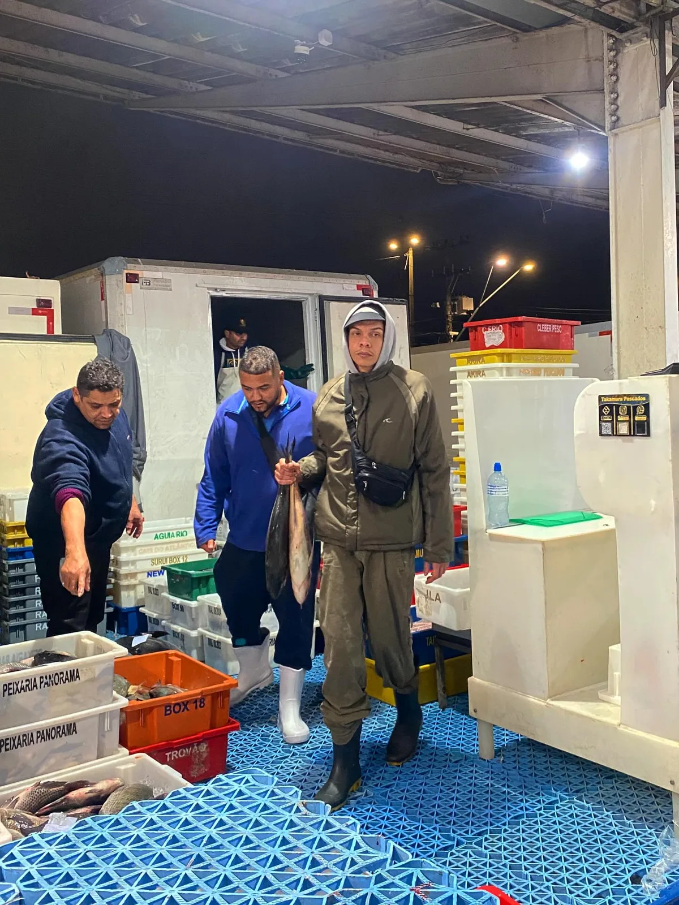
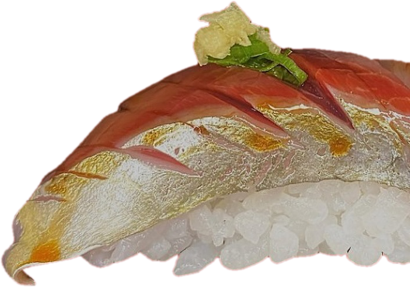
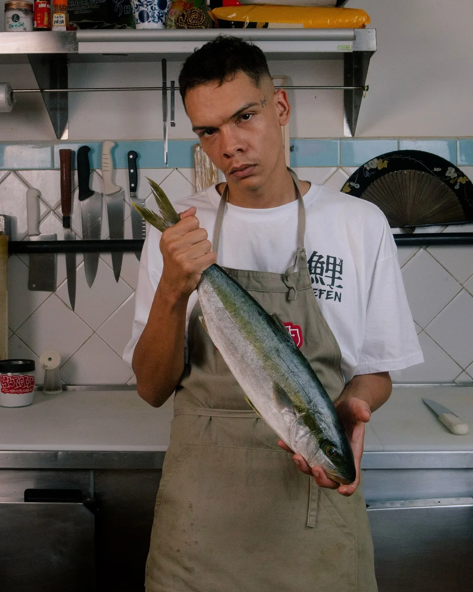
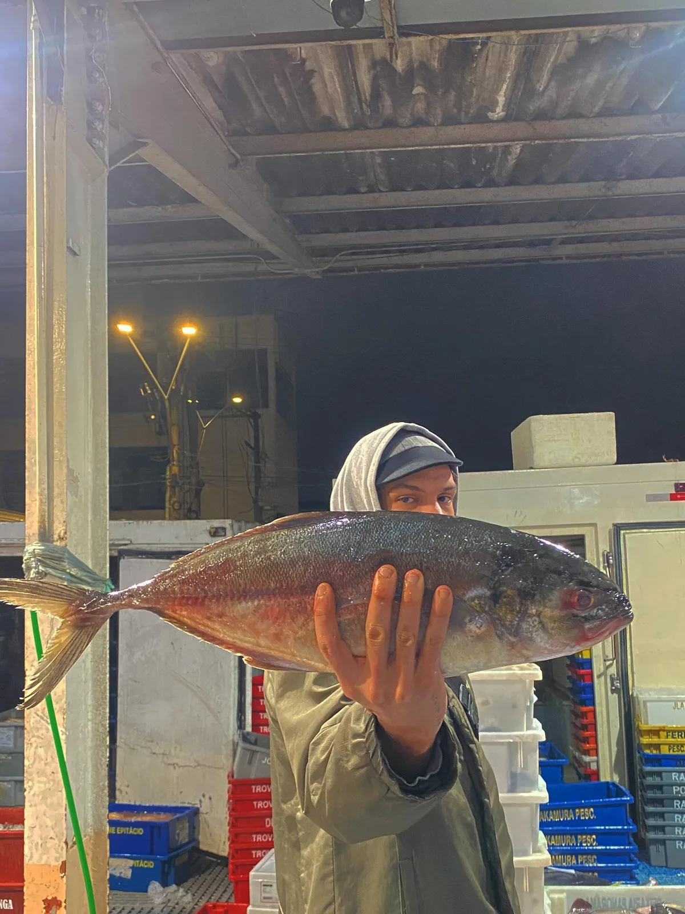
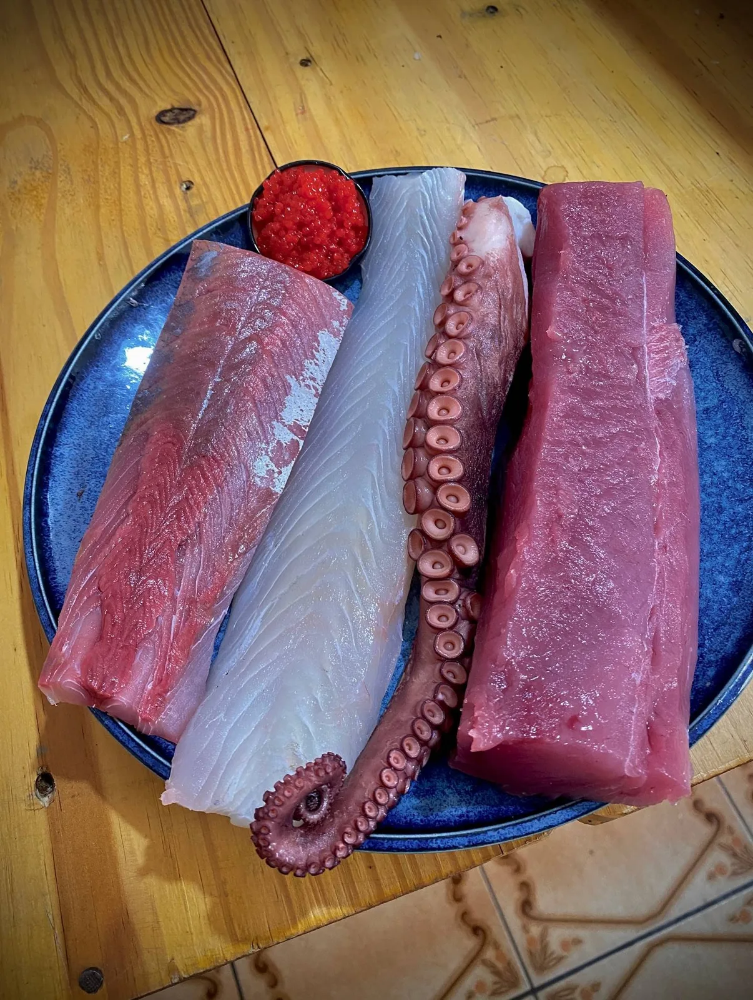
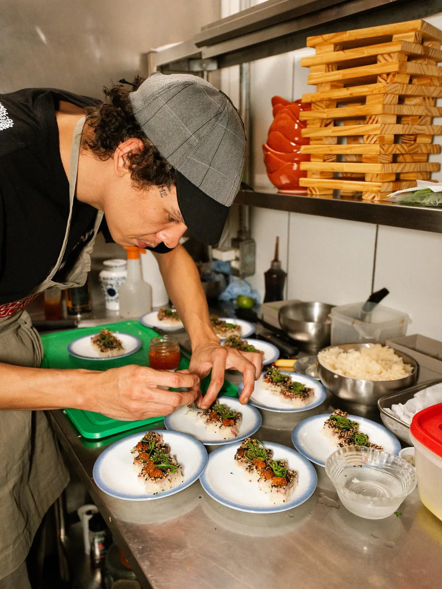
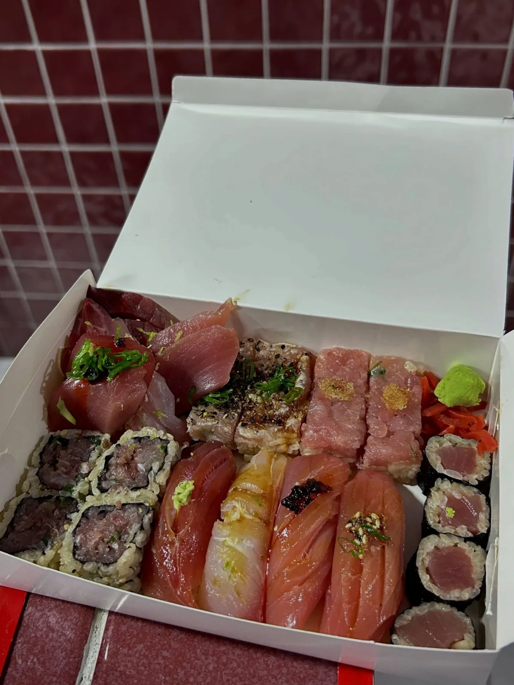
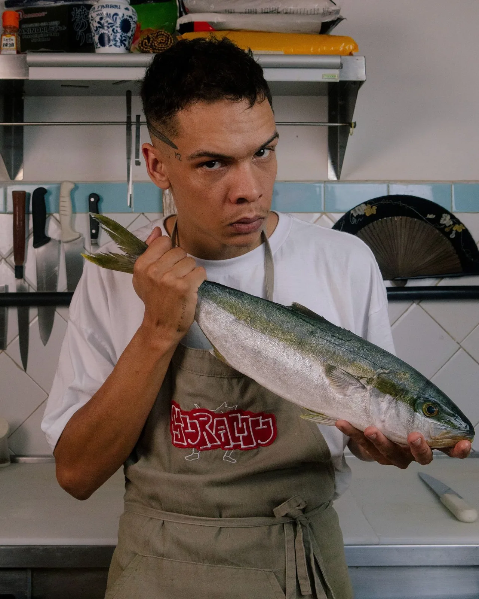

04:00
Mercado
Antes do sol, no mercado de peixe. Conversa com o peixeiro, olho no olho.

Sushi de verdade, feito na quebrada, pra quebrada. Peixe comprado de madrugada, cortado no mesmo dia.
Manifesto 01/03
Nada de esconder peixe embaixo de queijo. O sabor vem do corte, do arroz e do tempero no ponto.
Manifesto 02/03
Salmão de cativeiro vem de longe e chega sempre igual. A gente prefere o que o mar daqui entregou hoje.
Manifesto 03/03
O cardápio é o que o mar entregou. Se o peixe não estiver bom, não entra na caixa.

Todo dia o quadro muda. O que chegou de madrugada, o que tá acabando e o que já foi.
Hoje
本日の魚
Do mercado ao balcão

04:00
Antes do sol, no mercado de peixe. Conversa com o peixeiro, olho no olho.

04:40
Olho brilhante, guelra vermelha, carne firme. Se não passar no teste, não vem.

10:00
Peixe limpo, porcionado e descansando no frio. Nada congelado, nada de ontem.

18:00
Arroz temperado na hora. Peça por peça, na mão, do jeito que os mestres ensinaram.

19:00
Caixa fechada e direto pra sua porta. Do mar pra mesa no mesmo dia.
04 · Cardápio
As peças mudam com o peixe do dia. Combos montados pelo chef, sem salmão e sem cream cheese.
05 · Nossa história
Durante muito tempo, sushi foi coisa de restaurante elitizado. Não era comum ver peixe sendo cortado e servido na periferia.
Mas a gente já estava lá dentro. Primeiro como mão de obra, atravessando a cidade todo dia pra trabalhar nas cozinhas do outro lado. Depois como cliente. Agora, como dono.
Os primeiros sushimans brasileiros aprenderam observando os mestres japoneses, na prática, no corre. A SURAMU nasce disso: sushi adaptado pro estilo de vida dos nossos, sem perder o respeito por uma cultura milenar.
